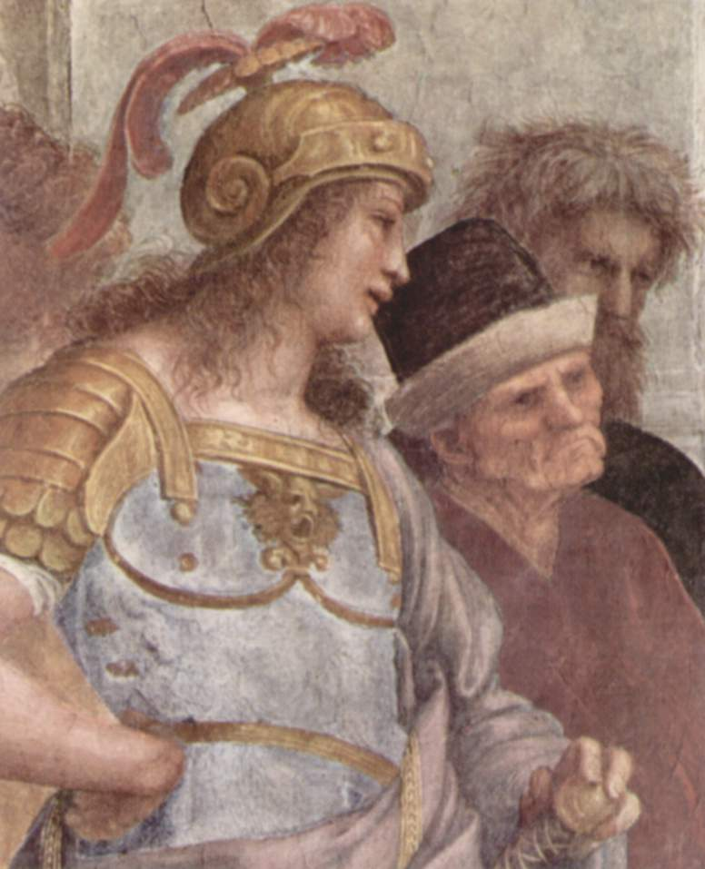

Composición
- Simetría y balance: La composición es notablemente simétrica, estructurada en torno a una línea central que divide la pintura, destacando a Platón y Aristóteles en el centro como figuras principales. La simetría crea un equilibrio visual, generando una armonía clásica característica del Renacimiento.
- Uso de perspectiva: Rafael utiliza la perspectiva lineal de manera magistral. Los puntos de fuga convergen hacia el centro, justo detrás de las cabezas de Platón y Aristóteles, atrayendo la atención del espectador hacia estos personajes. Esta técnica no solo crea profundidad en el espacio arquitectónico, sino que también jerarquiza a los personajes centrales.
- Ejes horizontales y verticales: Los arcos y las figuras están dispuestos en ejes horizontales y verticales, lo que da a la escena un orden y claridad. Las líneas horizontales en la arquitectura refuerzan la estabilidad y monumentalidad del espacio, mientras que las verticales enfatizan la altura y solemnidad del lugar.
.jpg)
Armonía Clásica
Rafael crea una armonía visual a través del uso de proporciones equilibradas, inspiradas en las obras de la Antigua Grecia y Roma. Cada grupo de personajes se organiza en torno a las dos figuras centrales y, a pesar de la complejidad de la escena, cada personaje ocupa su espacio sin desbordar el entorno. La obra refleja los ideales renacentistas de orden y proporción, retomando los cánones clásicos de belleza.
Color y Luz
- Paleta de colores: Rafael emplea una paleta moderada y suave, con tonos tierra, azules y rojos, creando un contraste equilibrado que permite distinguir cada grupo de personajes sin interrumpir la unidad visual. Los colores resaltan la serenidad y seriedad de la atmósfera.
- Iluminación: La iluminación es suave y difusa, típica de los frescos renacentistas. La luz se utiliza para modelar los volúmenes de los personajes y resaltar la arquitectura del fondo. La luz que baña a los personajes centrales crea una jerarquía natural y enfatiza su importancia filosófica.
- Claroscuro: Rafael utiliza el claroscuro para dar volumen y profundidad a las figuras, creando una tridimensionalidad que aporta realismo. Esto, sumado a la perspectiva, da una sensación de que los personajes ocupan un espacio tangible.
Arquitectura y Escenario
La arquitectura que Rafael representa está inspirada en la antigua Roma, pero también recuerda los diseños de Bramante, arquitecto contemporáneo de Rafael y posible inspiración para el escenario arquitectónico de la obra. El fondo monumental y clásico refuerza el contexto filosófico y humanista de la pintura.
- Arcos de medio punto: Los arcos semicirculares del fondo contribuyen a crear una sensación de grandeza y solemnidad. El uso de bóvedas y arcos es típico del Renacimiento, resaltando la conexión entre los ideales filosóficos griegos y los valores renacentistas de Rafael.
- Estatua de Apolo y Atenea: En la parte superior, las esculturas de Apolo (dios de la razón y las artes) y Atenea (diosa de la sabiduría) representan simbólicamente el marco intelectual y racional de la obra, destacando los valores de sabiduría y conocimiento.
Distribución y Jerarquía de los Personajes
- Grupos de pensadores: Los personajes se agrupan en torno a Platón y Aristóteles, cada uno representando diferentes ramas del conocimiento como la filosofía, la astronomía, las matemáticas y la geometría. Este orden ilustra la organización intelectual de la época.
- Platón y Aristóteles en el centro: Rafael posiciona a Platón y Aristóteles en el centro de la obra, con Platón señalando hacia el cielo (representando el mundo de las ideas) y Aristóteles hacia la tierra (en referencia al conocimiento empírico). La dualidad de sus gestos simboliza la tensión entre el idealismo y el realismo filosófico.

Técnica de Fresco
Rafael utilizó la técnica del fresco, en la cual se aplica pigmento mezclado con agua sobre yeso húmedo. Esto permite que el color se fije en el muro al secarse, resultando en una obra duradera.
Pintar en fresco requiere precisión y planificación, ya que una vez que el yeso se seca, no es posible realizar cambios sin dañar la pintura. Rafael debió trabajar rápidamente y con gran habilidad para lograr los detalles minuciosos y la integración cromática.
Detalles y Expresividad
Cada personaje tiene una postura y expresión cuidadosa que comunica su personalidad o su campo de conocimiento. Rafael dota a cada figura de una actitud y gestos que reflejan su rol en la filosofía y el saber, mostrando un dominio en la observación del comportamiento humano y la expresión corporal.
Zenón de Citio o Zenón de Elea
Filósofo griego discípulo de Parménides, representante de la escuela eleática.
Epicuro

Creador del epicureísmo que, entre otras cosas, negaba la inmortalidad del alma y defendía el hedonismo.
Averroes y Pitágoras

Averroes fue un filósofo, matemático y médico andalusí de la Edad Media (siglo XII), quien enseñaba también leyes islámicas.
Pitágoras fue un filósofo y matemático griego. Además de un libro, frente a él vemos una pizarra que muestra del triángulo numérico “Tetraktys”, símbolo de la unidad del universo, y vemos también el símbolo de la teoría de la armonía musical.
Alcibíades o Alejandro Magno y Antístenes o Jenofonte

Alejandro Magno fue rey de Macedonia, quien venció a los persas y extendió su imperio a Grecia, Egipto hasta la India. Llegó a ser discípulo de Aristóteles.
Jenofonte fue un historiador, filósofo y militar. Una de sus obras más importantes es Helénicas, sobre la Guerra del Peloponeso. También pudiera tratarse de Antístenes, fundador de la escuela cínica en la Antigüedad griega.
Hipatia de Alejandría y Parménides

Hipatia de Alejandría fue filósofa y profesora neoplatónica, conocida por sus contribuciones en matemática, astronomía, álgebra y geometría.
Parménides fue filósofo, precursor del idealismo platónico y fundador de la escuela Eleática.
Esquines y Sócrates

Algunos investigadores proponen que la figura de la izquierda podría tratarse de un personaje de El Banquete de Platón llamado Alcibíades, debido a que se encuentra dialogando con Sócrates.
Sócrates es considerado el padre del pensamiento filosófico griego e impulsor de la dialéctica. Fue el maestro de Platón.
Miguel Ángel como Heráclito
Filósofo, representado como Miguel Ángel tanto en facciones como atuendo y, a su vez, sobre una base de mármol.
Leonardo da Vinci como Platón

Platón, quien ha sido representado con los rasgos del maestro Leonardo da Vinci, sostiene el libro Timeo. Su dedo apunta hacia el cielo. Este gesto hace referencia a la Teoría de las Ideas que fundamenta su línea de pensamiento.
Aristóteles
A la derecha de Platón, vemos a Aristóteles sosteniendo el libro Ética. Su mano derecha, a la altura de la cintura, mantiene la palma paralela a suelo. Con ello, Rafael alude a la teoría de las formas de Aristóteles, quien pensaba que las cosas son en sí mismas y que no existen como realidad dual (separación cuerpo y alma).
Diógenes

Pensador de la escuela cínica, famoso por su desinterés en los usos y costumbres sociales, a lo que contraponía el principio de la autonomía.
Bramante como Euclides o Arquímedes

(Figura de rojo) No se sabe a ciencia cierta a quién representa esta figura, pero a juzgar por el uso del compás, puede tratarse de Euclides o de Arquímedes. El rostro es el de Leonardo Bramante, arquitecto del Renacimiento.
Estrabón o Zoroastro, Ptolomeo, Rafael (detrás) como Apeles y El Sodoma como Protógenes
_como_Apeles_y_El_Sodoma_como_Protogenes.jpg)
Zoroastro o Estrabón es el personaje que porta un globo celeste. La tesis más difundida sostiene que se trata de Zoroastro, un profeta fundador de una de las primeras religiones monoteístas, conocida como mazdeísmo. Otros investigadores sugieren que se trata de Estrabón, un geógrafo e historiador griego.
Ptolomeo fue un astrónomo, geógrafo, matemático y químico de la transición entre el siglo I y el siglo II c.C, de origen greco-egipcio. Sostiene un globo terráqueo.
La figura autorretratada como Rafael Sanzio encarna al personaje de Apeles, pintor de la Edad Antigua. Normalmente, cuando esto ocurre en pintura, el autor mira directamente al público, rompiendo la ficción.
Protógenes era otro pintor de la Edad Antigua, rival de Apeles. Rafael lo retrata como El Sodoma (sobrenombre de Giovanni Antonio Bazzi), un pintor contemporáneo a quien Rafael sustituyó para el encargo de la Estancia del Sello.
Anaximandro
Este personaje pudiera ser Anaximandro, discípulo de Tales de Mileto, fue conocido como filósofo y geógrafo. También se han sugerido los nombres de Severino Boezio, Aristosseno, Senocrate y Empedocle.